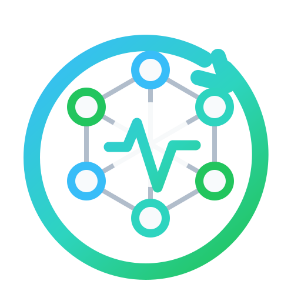

OpenCause Compute Worker
Contribute idle compute to AI-assisted open science.
First-run setup
We’ll walk through Ollama, the recommended model, worker registration, and safe resource defaults. OpenCause Compute is research support, not medical advice, and you can pause the worker at any time.
1. Install Ollama
Checking Ollama...
2. Download a model
3. Register worker
Enter the one-time enrollment code from your invite or enrollment email. Codes are used only on computers you control.
Profile and impact sharing
Set your display name, privacy, team, and impact-sharing preferences. Profiles default to private.
4. Resource settings
Defaults are conservative: idle-only, limited CPU, and no battery work.
Worker dashboard
Checking worker...
Current session
Selected local model
Completed work
Resource telemetry such as CPU/GPU usage and temperatures will appear after hardware telemetry is added.
Uninstall and local data
Removing the app from Windows Apps/Programs removes the application. Use this button first if you also want to remove local worker credentials, enrollment state, and logs from this computer.